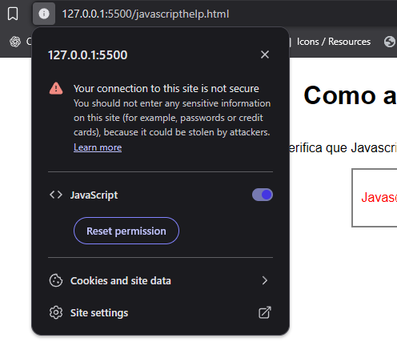
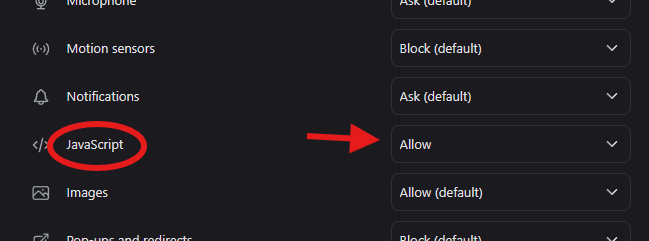

Verifica que Javascript este activado, mira el siguiente texto:
Javascript no esta funcionando!
Si dice "Javascript no esta funcionando!" entonces activalo de la siguiente forma:
1. Haz clic en el candado o el icono de informacion (i) en la barra de direcciones

2. Haz clic en 'site settings' o 'configuracion del sitio'
3. Busca la opcion 'Javascript' y establecela en 'allow' o 'permitir'
